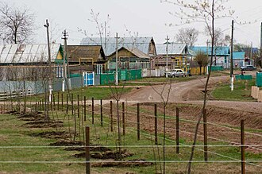

Бавли́нский район (тат. Баулы районы) — административно-территориальная единица и муниципальное образование (муниципальный район) в составе Республики Татарстан Российской Федерации. Находится на крайнем юго-востоке республики. Административный центр — город Бавлы. На начало 2020 года в районе проживает 34 479 человек. Первое упоминание о поселениях на этой территории относится к XVII веку. Район был зарегистрирован 10 августа 1930 года как административное образование ТАССР. В 1963-м Бавлинский район присоединили к Бугульминскому, а через два года воссоздали с центром в рабочем посёлке Бавлы.
